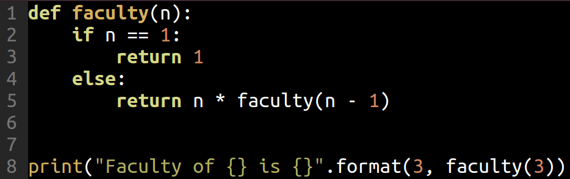
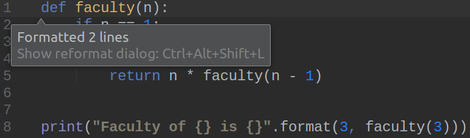

Python++
linux.conf.au 2019
Jan Groth
About me
- DevOps Engineer at Versent* in Sydney**
- Developer Background
(*) We are hiring
(**) In Sydney and Melbourne
This talk
- I'm a Python guru, here are 10 Python features - now start using them!
- Things that I find useful when writing code Python
- Don't take notes
What year is this?
- The Dark Knight is the most popular movie
- Lehman Brothers file for bankruptcy
- Spotify launches in Sweden
- Lady Gaga has number-one singles with Just Dance and Poker Face
2008
Python 3.0 was released on December 3, 2008
It was designed to rectify fundamental design flaws in the language—the changes required could not be implemented while retaining full backwards compatibility with the 2.x series, which necessitated a new major version number
Source: Wikipedia
Python 2
or
Python 3?
Best reason to stop using Python 2.7 now:
Python versions and project dependencies
One Python environment per project
! Don't use the system environment
Project dependencies as unspecific as possible
Declare only direct dependencies
Ignore transitive dependencies
Installing boto3 and pyyaml...
requirements.txt:
boto3==1.9.71
botocore==1.12.71
docutils==0.14
jmespath==0.9.3
python-dateutil==2.7.5
PyYAML==3.13
s3transfer==0.1.13
six==1.12.0
urllib3==1.24.1
boto3
PyYAML
Tip #1
Stay ahead of Python's versions
- Use Python 3
- Use a tool to manage dependencies
- venv
- pipenv
- docker & venv
Readability
Write once. Read many times.
More conventions - less thinking ...
CONSTANTS_IN_UPPERCASE = 123
variables_are_lowercase = 'OH YES!'
def methods_are_lowercase_too():
pass
def all_use_kebap_case():
pass
File names...
lambda.py
nexus.py
rewards-calculation-lambda.py
query-nexus-for-latest-snapshot.py
Method names...
# creates new sftp client
def sftp_client(username, password):
pass
def create_sftp_client(username, password):
pass
Complex code ...
# scale out if less than 3 instances
if len(current_instances) < 3:
add_instance()
if should_scale_out(current_instances):
add_instance()
Tip #2
Use language conventions
Make an effort to find good names
Introduce methods to increase readability
Writing beautiful code
There is beauty in simplicity.
counter = 0
while counter < 5:
print(counter)
counter += 1
for i in range(5):
print(i)
Loop vs List Comprehension
symbols = '$¢£¥€¤'
codes = []
for symbol in symbols:
codes.append(ord(symbol))
>>> [36, 162, 163, 165, 8364, 164]
symbols = '$¢£¥€¤'
codes = [ord(symbol) for symbol in symbols]
>>> [36, 162, 163, 165, 8364, 164]
Commenting every single line is essential ...
..if you are writing in Assembler.
flash2ram:
lpm ;get constant
st Y+,r0 ;store in SRAM and increment Y-pointer
adiw ZL,1 ;increment Z-pointer
dec flashsize
brne flash2ram ;if not end of table, loop more
ret
In Python not so much.
def pfPasswordHash(arg):
# Randomise Salt
salt = os.urandom(6)
# Convert String to Byte Array
res = arg.encode()
# Hash through 10000 times.
for lp in range(100000):
# Always initialize hashlib, because [...]
m = hashlib.sha256()
# Swap between the two inputs into the digest based on loop number
m.update(res) if lp % 2 else m.update(salt)
m.update(salt) if lp % 2 else m.update(res)
# Finish the digest
res = m.digest()
In Python not so much.
def pfPasswordHash(arg):
# Randomise Salt
salt = os.urandom(6)
# Convert String to Byte Array
res = arg.encode()
# Hash through 10000 times.
for lp in range(100000):
# Always initialize hashlib, because [...]
m = hashlib.sha256()
# Swap between the two inputs into the digest based on loop number
m.update(res) if lp % 2 else m.update(salt)
m.update(salt) if lp % 2 else m.update(res)
# Finish the digest
res = m.digest()
Tip #3
Write code that is both functional and simple
Use Python idioms where you can
Comment only what you cannot say in code
Classes
A basic calculator
Calculations on top of a base number
base = 10
def multiply(number):
return base * number
def add(number):
return base + number
print(multiply(5)) # ...50
print(add(7)) # ...12
.
Time passes ...
New requirements are coming in...
base = 10
def multiply(number):
return base * number
def add(number):
return base + number
print(multiply(5)) # ...50
print(add(7)) # ...12
.
Calculations on top of a second number
base = 10
def multiply(number):
return base * number
def add(number):
return base + number
print(multiply(5)) # ...50
print(add(7)) # ...12
base = 6
print(multiply(5)) # ...30
print(add(7)) # ...13
Separation of state...
base = 10
def multiply(number):
return base * number
def add(number):
return base + number
print(multiply(5)) # ...50
print(add(7)) # ...12
base = 6
print(multiply(5)) # ...30
print(add(7)) # ...13
...and behaviour
base = 10
def multiply(number):
return base * number
def add(number):
return base + number
print(multiply(5)) # ...50
print(add(7)) # ...12
base = 6
print(multiply(5)) # ...30
print(add(7)) # ...13
Using classes to redesign the calculator
- A class is a blueprint for objects
- An object encapsulates data as well as methods
API Design first ...
calculator = Calculator(base=10)
print(calculator.multiply_by(5))
print(calculator.add(7))
API Design first ...
calculator = Calculator(base=10)
print(calculator.multiply_by(5))
print(calculator.add(7))
Different calculators are now separate objects ...
base_ten_calc = Calculator(base=10)
print(base_ten_calc.multiply_by(5)) # ...50
print(base_ten_calc.add(7)) # ...17
base_six_calc = Calculator(base=6)
print(base_six_calc.multiply_by(5)) # ...30
print(base_six_calc.add(7)) # ...13
Implementation
class Calculator:
def __init__(self, base):
self.base = base
def multiply_by(self, number):
return self.base * number
def add(self, number):
return self.base + number
Implementation
class Calculator:
def __init__(self, base):
self.base = base
def multiply_by(self, number):
return self.base * number
def add(self, number):
return self.base + number
Implementation
class Calculator:
def __init__(self, base):
self.base = base
def multiply_by(self, number):
return self.base * number
def add(self, number):
return self.base + number
A real-world example -
Syncing a file between SFTP and S3
s2s_sync = Sftp2S3(server_name='a.b.c', bucket_name='my-bucket')
s2s_sync.sync_file('foo.txt')
s2s_sync.sync_file('baz/bar.txt')
A real-world example -
Syncing a file between SFTP and S3
s2s_sync = Sftp2S3(server_name='a.b.c', bucket_name='my-bucket')
s2s_sync.sync_file('foo.txt')
s2s_sync.sync_file('baz/bar.txt')
A real-world example -
Syncing a file between SFTP and S3
s2s_sync = Sftp2S3(server_name='a.b.c', bucket_name='my-bucket')
s2s_sync.sync_file('foo.txt')
s2s_sync.sync_file('baz/bar.txt')
Implementation Design
class Sftp2S3:
def __init__(self, server_name, bucket_name):
self.bucket = boto3.resource('s3').Bucket(bucket_name)
self.sftp_server = self._init_sftp(server_name)
def _init_sftp(self, server_name): pass
def _needs_sync(self, file_name): pass
def _copy_from_sftp(self, file_name): pass
def sync_file(self, file_name):
if (self._needs_sync(file_name)):
self._copy_from_sftp(file_name)
Implementation Design
class Sftp2S3:
def __init__(self, server_name, bucket_name):
self.bucket = boto3.resource('s3').Bucket(bucket_name)
self.sftp_server = self._init_sftp(server_name)
def _init_sftp(self, server_name): pass
def _needs_sync(self, file_name): pass
def _copy_from_sftp(self, file_name): pass
def sync_file(self, file_name):
if (self._needs_sync(file_name)):
self._copy_from_sftp(file_name)
Implementation Design
class Sftp2S3:
def __init__(self, server_name, bucket_name):
self.bucket = boto3.resource('s3').Bucket(bucket_name)
self.sftp_server = self._init_sftp(server_name)
def _init_sftp(self, server_name): pass
def _needs_sync(self, file_name): pass
def _copy_from_sftp(self, file_name): pass
def sync_file(self, file_name):
if (self._needs_sync(file_name)):
self._copy_from_sftp(file_name)
This was just a sneak peek into classes
- Re-use code elsewhere
- Utilize inheritance to implement your own generators, collections ...
- And ...
Unit Testing
class TestCalculator(TestCase):
def test_multiply_with_zero_is_zero(self):
# setup
calc = Calculator(29)
# exercise
result = calc.multiply_by(0)
# verify
self.assertEqual(0, result)
Tip #4
Encapsulate behaviour as well as state
Use classes - The door to a whole new world
The right tool for the job
What does this code print?
... not much

Remove unused imports ...

Reformat code according to Python standards ...
Throw in a breakpoint ...
Change a method name across the whole project ...

Tip #5
Python is a high-level programming language.
Use an IDE.
Just because you can.
Language Features
Using Jinja templates to generate Jenkins pipelines
GIT_BRANCHES = ['master', 'development']
...
for (branch in GIT_BRANCHES) {
...
}
git:
branches:
- master
- development
GIT_BRANCHES = {{ git.branches}} # Does not come out as a groovy literal...
Using Jinja templates to generate Jenkins pipelines
GIT_BRANCHES = ['master', 'development']
...
for (branch in GIT_BRANCHES) {
...
}
git:
branches:
- master
- development
GIT_BRANCHES = {{ git.branches | to_groovy_list }} # Custom Jinja filter...
Registering a custom Jinja filter
from jinja2 import Environment
jinja_env = Environment() # [...]
jinja_env.filters['quoted'] = quoted
jinja_env.filters['to_groovy_list'] = to_groovy_list
def quoted(text):
return "'{}'".format(text)
def to_groovy_list(list):
return '[{}]'.format(', '.join(map(quoted, list)))
Registering a custom Jinja filter
from jinja2 import Environment
jinja_env = Environment() # [...]
jinja_env.filters['quoted'] = quoted
jinja_env.filters['to_groovy_list'] = to_groovy_list
def quoted(text):
return "'{}'".format(text)
def to_groovy_list(list):
return '[{}]'.format(', '.join(map(quoted, list)))
Registering a custom Jinja filter
from jinja2 import Environment
jinja_env = Environment() # [...]
jinja_env.filters['quoted'] = quoted
jinja_env.filters['to_groovy_list'] = to_groovy_list
def quoted(text):
return "'{}'".format(text)
def to_groovy_list(list):
return '[{}]'.format(', '.join(map(quoted, list)))
The same, using a decorator
jinja_env = Environment() # [...]
def custom_filter(func):
jinja_env.filters[func.__name__] = func
@custom_filter
def quoted(text):
return "'{}'".format(text)
@custom_filter
def to_groovy_list(list):
return '[{}]'.format(', '.join(map(quoted, list)))
The same, using a decorator
jinja_env = Environment() # [...]
def custom_filter(func):
jinja_env.filters[func.__name__] = func
@custom_filter
def quoted(text):
return "'{}'".format(text)
@custom_filter
def to_groovy_list(list):
return '[{}]'.format(', '.join(map(quoted, list)))
Implementing a CLI tool
query-nexus.py \
--nexus-url 'https://nexus.local' \
--repo 'maven-releases' \
--group 'com.company.ms' \
--artifact 'my-api' \
--version '1.0.8'
Using argparse
parser = argparse.ArgumentParser('Get Swagger URL')
parser.add_argument('--nexus-url', nargs='?', default='…', help='…')
parser.add_argument('--repo', nargs='?', default='…', help='…')
parser.add_argument('--group', nargs='?', default='…', help='…')
parser.add_argument('--artifact', nargs='?', help='…')
parser.add_argument('--version', nargs='?', help='…')
parser.add_argument('--debug', action='store_true')
args = parser.parse_args()
Using the Click framework
@click_command
@click.option('--nexus-url', '-n', default='…', help='…')
@click.option('--repo', '-r', default='…', help='…')
@click.option('--group', '-g', default='…', help='…')
@click.option('--artifact', '-a', default='…', help='…')
@click.option('--version', '-v', default='…', help='…')
@click.option('--debug', '-d', default='…', help='…')
def retrieve_swagger_url(nexus_url, repo, group, artefact, version, debug):
pass
Tip #6
Look around.
The End ☺
I hope you find it useful
Or ...
Tim Peters, Python core developer:
Here's the plan:
When someone uses a feature you don’t understand, simply shoot them. This is easier than learning something new, and before too long the only living coders will be writing in an easily understood, tiny subset of Python 0.9.6 ;-)
The talk
jangroth.github.io/linuxconf2019
References and more reading
github.com/jangroth/linuxconf2019